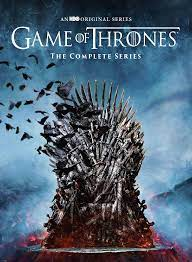
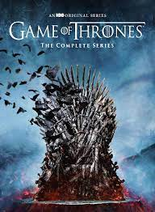

I'm Romeo Nombre Jr. Currently residing in Cagayan de Oro. I'm a BSIT student undergrad. I always have a passion on coding and developing in general, but unfortunately I wasn't able to pursue a career in this field. I intend to have a career in this field, that's why I joined the bootcamp.

This is the game that I'm having a great time playing during my spare time.
 
Breaking Bad, by far the best show on my list. For GOT though, it has the potential to be on the same level as BB, but unfornately the later seasons ruined the entire show
Actually for the story, I'd rather choose Attack on Titan, but since I reserved it for the best written manga, then I chose Jujutsu Kaisen instead.


My web dev Journey have become very enlightening. Even though I already have knowledge in programming, being in the bootcamp made me realize that I still have a lot to learn, and that makes me excited!